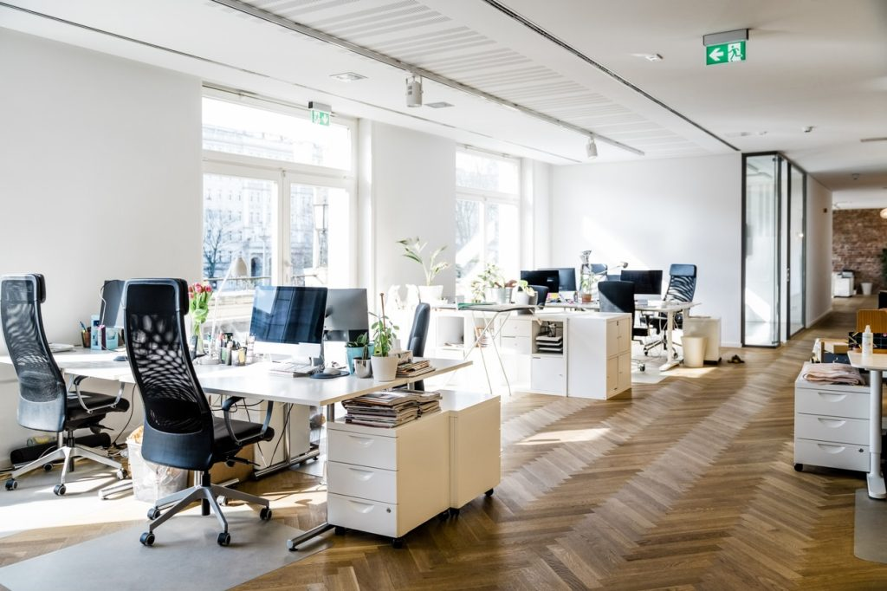
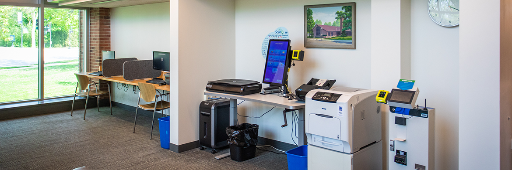
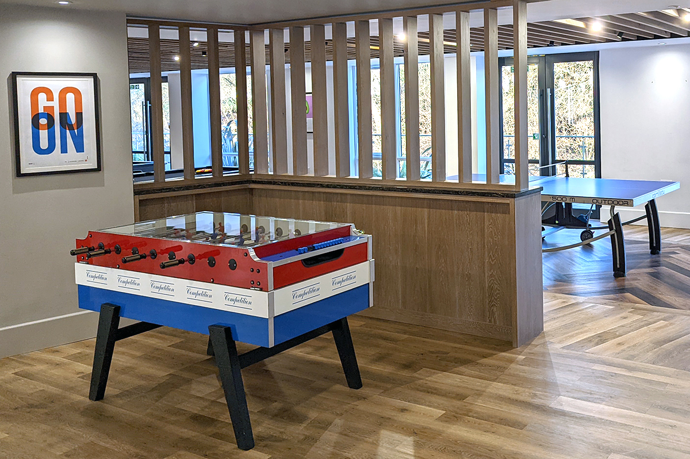

Coworking
space
ÅPNE KONTORLANDSKAP
Hos USN Coworking Space tilbyr vi åpne kontorlandskap som
passer for deg som ønsker å jobbe i et åpent lokale med
med dine medarbeidere og samarbeidspartnere
Vi tilbyr lokaler med tilgang til sollys, kontorstoler, pulter og
et stort utvalg av kontorrekvisita

PRIVATE KONTOR
Våre private kontor er det perfekte kontoret for dem som ønsker å
arbeide uforstyrret og effektivt.
vegger vegger som er perfekt for dem som ønsker
å jobbe i litt mer rolige omstendigheter

KONTORETS LOUNGE
Kontorets lounge er det perfekte stedet å ta med merarbeiderne i
pausene for å slappe av, slå av en prat eller ta seg en kaffe
Det er ikke mangel på behagelige sitteplasser i kontorets lounge
Så det er bare å slå seg til ro i en av dem

KJØKKEN OG SPISEOMRÅDE
Vårt kjøkken og spiseområde tilbyr gode muligheter for å sette
seg ned og nyte en matbit iløpet av arbeidsdagen
Kjøkkenet og spiseområde er etstyrt med mange sitteplasser og
spisebord samt kjøkkenredskaper og kjøkkenfasiliter
SCAN OG PRINTOMRÅDE
Vårt scan og printeområde ligger sentralt i bygget og er lett
tilgjengelig for alle som måtte ha behov for å bruke det
Det koster 0,5Kr per ark man ønsker å printe fra printeren
men bruker av scanneren er gratis for alle
GAME ROOM
Vårt game room er det perfekte stedet for å ha det litt gøy
i løpet av den effektive og produktive arbeidsdagen
Vårt game room tilbyr dart, bordfotball, bordtennis, sjakk
og en rekke andre interessante brettspill